Default
List item 2
List item 3
List item 4
List item 5
List item 6
List item 7
List item 8
List item 9
List item 10
List item 1
List item 12
List item 13
List item 14
List item 15
List item 16
List item 17
List item 18
List item 19
List item 20
Kistans Ölsortiment

Tweeta